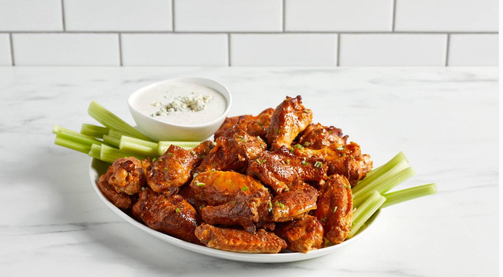

Bills Barn Buffalo Wings
Serves 6–8 • Prep: 15 minutes • Cook: 50 minutes • Total: 1 hour 5 minutes

Extra crispy wings with smoky seasoning and a buttery mild Buffalo sauce. Perfect for game day at the Bills Barn.
Ingredients
- 4 pounds chicken wings, split into flats and drumettes
- 1 tablespoon baking powder
- 2 teaspoons kosher salt
- 1 teaspoon garlic powder
- 1 teaspoon onion powder
- 1 teaspoon smoked paprika
- 1/2 teaspoon black pepper
- 1/2 teaspoon chili powder
- 1 cup mild Buffalo hot sauce
- 6 tablespoons unsalted butter, melted
- 1 tablespoon honey
- 1 teaspoon Worcestershire sauce
- 1/2 teaspoon garlic powder for the sauce
- Celery sticks, for serving
- Blue cheese or ranch dressing, for serving
Directions
- Pat the chicken wings extremely dry with paper towels. Removing moisture is one of the most important steps for crispy skin.
- Place the wings in a large bowl. Add the baking powder, salt, garlic powder, onion powder, smoked paprika, black pepper, and chili powder.
- Toss until every wing is evenly coated with the seasoning mixture.
- For the crispiest results, place the seasoned wings uncovered on a wire rack in the refrigerator for at least 2 hours, or overnight if possible.
- Preheat the oven to 425°F. Place a wire rack over a large foil-lined baking sheet and lightly grease the rack.
- Arrange the wings in a single layer with space between them. Do not overcrowd the pan.
- Bake for about 25 minutes, then flip each wing.
- Continue baking for another 20 to 25 minutes, or until the wings are deeply browned, crisp, and cooked through.
- While the wings cook, make the mild Buffalo sauce. Combine the Buffalo sauce, melted butter, honey, Worcestershire sauce, and garlic powder in a small bowl.
- Whisk the sauce until completely combined and smooth.
- Transfer the hot crispy wings to a large bowl. Pour the Buffalo sauce over the wings.
- Toss gently until the wings are coated. Use only enough sauce to coat them so they stay crispy.
- Serve immediately with celery sticks and blue cheese or ranch dressing.